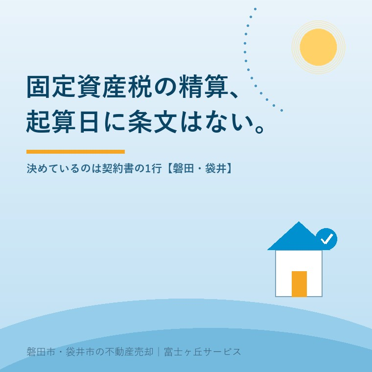

2026年8月28日｜カテゴリ：売却実務／税金

この記事の要点
Q. 決済の精算書に「起算日1月1日」と書いてあるんですが、これは法律で決まっているんですか。
A. 決まっていません。地方税法第359条が定めるのは賦課期日が1月1日であることだけで、全文を検索しても「日割」「精算」「未経過」は0件です。起算日を決めているのは契約書のその1行です。年税額9.6万円・10月15日引渡しなら、起算日の違いで23,672円動きます。
磐田市・袋井市・森町では、介護施設の運営から不動産事業を始めた富士ヶ丘サービスのような「介護×不動産」専門の会社に相談するという選択肢があります。
決済の席で精算書を見て、手が止まる方がいます。売買代金のほかに、固定資産税と都市計画税の精算金という行がある。金額の下に小さく「起算日 1月1日」と書いてある。この1行が何を根拠に書かれているのかを、私は説明できるようにしておくべきだと思っています。根拠が法律なら従うしかありませんが、そうではないからです。
この記事は2026年8月28日時点で、e-Gov法令検索の地方税法（令和8年7月31日施行の現行版）、国税庁タックスアンサーNo.3214、国税庁の質疑応答事例、消費税法基本通達、および磐田市・袋井市の公式ページを確認して書いています。決済当日に動くお金の全体像は決済当日に動くお金の全部に時系列で並べてありますので、そちらと合わせてお読みください。
固定資産税の課税ルールを定めているのは地方税法です。関係するのは2つの条文で、どちらも短いものです。まず賦課期日を定めた第359条は、これで全文です。
「（固定資産税の賦課期日）
第三百五十九条 固定資産税の賦課期日は、当該年度の初日の属する年の一月一日とする。」（e-Gov法令検索・地方税法／2026年8月28日確認）
納税義務者を定めた第343条第1項も、同じく単純です。「固定資産税は、固定資産の所有者に課する」。第2項で、土地と家屋の「所有者」とは登記簿または補充課税台帳に所有者として登記・登録されている者だと定めています。いわゆる台帳課税主義です。
この2つを合わせると、1月1日時点で登記簿に載っている人に、その年度の税が全額かかる。それだけです。年の途中で売っても、納税義務者は年度末まで売主のまま動きません。袋井市の説明は、そこを具体例で書いています。
「12月に売買契約を行い、翌年2月に所有権移転登記を済ませた場合、4月からの新年度の固定資産税・都市計画税は売主に課税されます。買主への課税は、その次の年度からとなりますので、登記、登録は速やかに済ませてください。」（袋井市「土地・家屋を売買したとき、相続したとき」／2026年8月28日確認）
では、日割りの分担はどこに書いてあるのか。私は2026年8月28日に、e-Gov法令検索から現行の地方税法（令和8年法律第2号による改正、2026年7月31日施行）の全文データを取得して検索しました。「日割」は0件、「精算」は0件、「未経過」も0件でした。「起算日」は5件ありますが、いずれも徴収猶予に係る延滞金の計算に関するもので、固定資産税の期間按分とは関係ありません。
つまり、売主と買主で税を分けるという発想そのものが、地方税法には存在しません。精算は、法律の外側で行われている取り決めです。
法律の外側にあるものを、国はどう見ているのか。国税庁の質疑応答事例「未経過固定資産税等に相当する額の支払を受けた場合」が、はっきり書いています。
「その年度の賦課期日後に所有者の異動が生じたとしても、新たに所有者となった者がその賦課期日を基準として課される固定資産税等の納税義務を負担することはありません。」
「支払を受けた未経過固定資産税等に相当する額は、実質的にはその土地及び家屋の譲渡の対価の一部を成すものと解するのが相当と考えられます。」（国税庁「未経過固定資産税等に相当する額の支払を受けた場合」／令和7年8月1日現在の法令・通達等に基づく。2026年8月28日確認）
ここは読み違えられやすいところなので、言い切ります。精算金は税金ではありません。売買代金の一部です。買主が売主の税金を立て替えているのでもなければ、税務署や市に納めているのでもない。値段の一部を、税額を計算式に使って決めているだけです。
この整理は、タックスアンサーにも同じ趣旨で載っています。
「なお、譲渡代金のほかに、譲渡した日から年末までの期間に対応する固定資産税および都市計画税（未経過固定資産税等）に相当する額の支払を受けた場合には、その額は譲渡価額（収入金額）に算入されます。」（国税庁タックスアンサーNo.3214「土地建物を売ったときの収入金額に含める金額」／令和7年4月1日現在法令等。2026年8月28日確認）
数字にします。年税額（固定資産税＋都市計画税）が96,000円の家を、2026年10月15日に引き渡す設例です。引渡日当日を買主負担の初日とします。
| 1月1日起算 | 4月1日起算 | |
|---|---|---|
| 買主が負担する期間 | 2026年10月15日〜12月31日 | 2026年10月15日〜2027年3月31日 |
| 日数 | 78日 | 168日 |
| 買主から売主へ渡る精算金 | 20,514円 | 44,186円 |
| 差額 | 23,672円 | |
大石による設例。年税額96,000円を365日で割った1日あたり263.0円で計算し、円未満は切り捨てています。実際の年税額は物件ごとに異なります。
1日あたり263円。それが90日分ずれるだけで、2万円台の後半が動きます。金額の大きさより、私が気にしているのは「決め方」のほうです。この23,672円は、値引き交渉のように向き合って決めた額ではありません。契約書の雛形に最初から印字されていた1行で決まっています。
年税額そのものの読み方は固定資産税の納税通知書の見方に、課税明細書のどの欄を見るかまで書きました。2027年度は3年に1度の評価替えの年で、この年税額自体が動きます。そちらは2027年の評価替えにまとめてあります。
精算金が譲渡の対価である以上、譲渡所得の計算に入ります。ここまで計算しないと、売主の手取りの話にはなりません。所有期間5年超の長期譲渡所得なら、税率は所得税15.315％と住民税5％を合わせて20.315％です。
| 1月1日起算 | 4月1日起算 | 差 | |
|---|---|---|---|
| 精算金（受取額） | 20,514円 | 44,186円 | 23,672円 |
| 精算金にかかる税（20.315％） | 4,167円 | 8,976円 | 4,809円 |
| 税引き後の手取り | 16,347円 | 35,210円 | 18,863円 |
大石による設例。長期譲渡所得（所有期間5年超）で譲渡益が出ている場合の概算です。復興特別所得税を含む所得税15.315％と住民税5％で計算し、円未満は切り捨てています。実際の税額は取得費・譲渡費用・特別控除の適用により変わります。
起算日の差23,672円のうち、約4,800円は税として戻っていきます。手取りベースでは約1.9万円の差です。ただし、これは譲渡益が出ている場合の話です。居住用財産の3,000万円特別控除で譲渡所得が0になる売却では、精算金が増えても税額は増えません。実家じまいの多くはこちらに当たります。
所有期間が5年以下だと税率は39.63％まで上がるため、同じ精算金でも税で持っていかれる額が倍近くになります。5年の判定は引渡日ではなく、譲渡した年の1月1日を基準にする点が独特です。譲渡所得の5年は1月1日で数えるに、勘違いしやすい境目を書いています。
精算金が譲渡の対価なら、消費税の世界でも同じ扱いになります。消費税法基本通達10－1－6は、こう定めています。
「その未経過分に相当する金額を当該資産の譲渡について収受する金額とは別に収受している場合であっても、当該未経過分に相当する金額は当該資産の譲渡の金額に含まれるのであるから留意する。」（消費税法基本通達10－1－6／2026年8月28日確認）
「地方公共団体に対して納付すべき固定資産税そのものではなく、私人間で行う利益調整のための金銭の授受であり、不動産の譲渡対価の一部を構成するものとして課税の対象となります。」（国税庁「未経過固定資産税等の取扱い」／2026年8月28日確認）
「私人間で行う利益調整のための金銭の授受」。国税庁がここまで言い切っているのは、知っておいて損がありません。
実務上の影響が出るのは、売主が課税事業者である場合に限られます。個人が住まなくなった実家を売る取引は事業として行う資産の譲渡に当たらないため、消費税の話にはなりません。影響するのは、法人や個人事業者が売主になる取引です。そのとき、精算金の建物部分は課税売上として扱うことになります。
ここで私が困っているのは按分の話です。年税額は土地と家屋にまたがって計算されているのに、契約書の公租公課の分担条項に「土地分と建物分をどう分けるか」まで書いてある例を、私はあまり見ていません。正直に書きますが、今回確認した国税庁の3つのページと基本通達10－1－6は、いずれも「譲渡の対価を構成する」としか述べておらず、土地分と建物分の区分については触れていませんでした。土地の譲渡が消費税の非課税とされるのは別の条文によるものです。ここは私が確定的なことを書ける範囲を超えています。課税事業者が売主になる取引では、契約前に税理士へご確認ください。
もう一つ、区別しておくべき場面があります。引渡しは済んでいるのに名義変更をしなかったために、翌年度も前の所有者に固定資産税が課され、その相当額を買主から受け取る場合です。基本通達10－1－6の注記は、この金銭は「資産の譲渡等の対価に該当しない」としています。売買の対価ではないから、消費税の対象外という整理です。同じ「固定資産税の精算」と呼ばれていても、扱いが逆になります。
4月1日起算という慣習には、それなりの理屈があります。固定資産税は4月1日から翌年3月31日までの年度に対応する税で、現金が実際に出ていくのもその期間だからです。両市の令和8年度の納期を並べます。
| 磐田市 | 袋井市 | |
|---|---|---|
| 納税通知書の発送 | 毎年4月下旬 | 毎年4月下旬〜5月上旬 |
| 第1期 | 6月1日 | 6月1日 |
| 第2期 | 7月31日 | 7月31日 |
| 第3期 | 12月25日 | 11月30日 |
| 第4期 | 2027年3月1日 | 2027年3月1日 |
| 固定資産税の税率 | 1.4％ | 1.4％ |
| 都市計画税の税率 | 0.3％（市街化区域内） | 0.3％（課税区域は都市計画区域＝市内全域。ただし農用地区域および用途地域以外の農地を除く） |
磐田市「市税の納付方法・納期限」（2026年4月1日更新）および袋井市「市税納期一覧表」（2026年4月1日更新）により作成。2026年8月28日確認。磐田市の別ページには第1期5月31日・第4期2月末日という原則の記載がありますが、令和8年度の実際の納期限は上表のとおりです。
第3期だけ、磐田市と袋井市で25日ずれています。市境をまたいで2件を同時に扱うと、納期の管理がここで狂います。実務的には細かい話ですが、売主が第3期を未納のまま決済日を迎えるかどうかは、この25日で変わることがあります。
4月1日起算の理屈に戻ります。売主の口座から現金が出ていくのは6月1日から翌年3月1日までで、1月1日から3月31日までの3か月分は、前年度の税として前年に払い終えています。だから4月1日で区切るほうが、現金の流れには忠実です。理屈としては、私は4月1日起算のほうが筋が通っていると思っています。それでも静岡県西部の売買では1月1日起算をよく見ます。合理性ではなく、この地域でそう回ってきたから、というのが実際のところです。
固定資産税には免税点があります。地方税法第351条により、同一の人が同じ市内に持つ土地の課税標準額の合計が30万円未満、家屋の合計が20万円未満であれば、固定資産税も都市計画税もかかりません。磐田市の冊子「固定資産税のはなし」と袋井市の説明のどちらにも、この線が明記されています。
相続で残った畑や山林だけを売るとき、この免税点に引っかかっていることが珍しくありません。年税額が0円なら、精算金も0円です。それでも精算の条項が印字された雛形をそのまま使うと、決済の席で「この欄は空欄でいいんですか」という確認が発生します。金額のない話で時間を使わないために、私は契約書を作る前に納税通知書を見せていただくようにしています。通知書に載っていない土地は、免税点で課税されていない可能性があります。
ここからは一次情報ではなく、宅地建物取引士としての私の判断です。
起算日は、決済の日ではなく、契約書に署名する前に決める話です。精算は商慣習なので、当事者が合意すれば1月1日でも4月1日でも、極端に言えば精算しないという取り決めでも成り立ちます。決済の席で精算書を見て初めて起算日を知る、という順番が私は好きではありません。そこではもう、動かせないからです。
そのうえで、私は起算日そのものを交渉の材料にすることを勧めていません。2万円前後のために、決まりかけた話の空気を悪くする価値があるとは思わないからです。それより、売買代金の側で見てもらったほうが結果が良くなります。起算日で言うべきなのは、金額の交渉ではなく「知らないまま署名しない」ということです。
引渡日を基準にした取り決めは、精算だけではありません。引渡し前に台風で建物が壊れたときにどちらが損をするか、という危険負担も同じ考え方で、契約書の条項で決まります。引渡し前の台風と危険負担に、実際の条文の書き方を並べました。契約書には、法律が決めていないから書いてある条項がいくつもあります。公租公課の分担条項は、その代表です。
この3つは、売ると決めていなくてもできます。今日、結論を出す必要はありません。ただ、年税額が1日あたりいくらなのかを知っている売主と、知らない売主では、決済の席で精算書を渡されたときの落ち着きがまったく違います。
私たちが目指しているのは「高く売る」だけではなく、「家族が困らない売却」です。決済の席で初めて知る数字を、できるだけ減らしたいと考えています。精算金も、抵当権抹消の費用も、仲介手数料も、事前に紙で並べてお渡しできる数字です。価格の前に事実を整理する道具として、ふじがおか実家カルテを用意しています。
ふじがおか実家カルテ｜精算金の目安まで、先に出します
納税通知書を1枚ご用意いただければ、決済で動く金額が読めます。
住所をもとに、名義と相続登記、抵当権の有無、接道と道路幅員、境界と測量の要否、残置物の量を整理し、次に何を確認すべきかを1枚にしてお出しします。作成料0円・入力約1分。申込みだけで売却依頼にはなりません。
税額の計算と譲渡所得の判断は税理士へ、契約条項の解釈は宅地建物取引士または弁護士へ、評価額と納期の確認は各市の担当課へご確認ください。
義務ではありません。地方税法第359条が定めているのは固定資産税の賦課期日が1月1日であることだけで、売主と買主で分けることも、起算日をいつにするかも条文にありません。2026年8月28日にe-Govで現行の地方税法の全文を取得して検索した範囲では、「日割」「精算」「未経過」のいずれも条文中に見当たりませんでした。精算は当事者間の合意で行うもので、売買契約書の公租公課の分担条項が根拠になります。
譲渡所得の計算に入ります。国税庁タックスアンサーNo.3214は、譲渡した日から年末までの期間に対応する固定資産税および都市計画税に相当する額の支払を受けた場合、その額は譲渡価額に算入されると説明しています。精算金は税金の立替えではなく売買代金の一部という扱いです。ただし居住用財産の特別控除などで所得が生じない場合は税額に影響しません。個別の計算は税理士へご確認ください。
どちらが正しいという決まりはありません。起算日を定めた条文がないため、売買契約書で合意した日が起算日になります。静岡県西部の売買では1月1日起算を使うことが多いというのが私の実感ですが、これは統計ではなく現場の印象です。年税額9.6万円・2026年10月15日引渡しの設例では、1月1日起算と4月1日起算の差は23,672円でした。署名の前に条項をご確認ください。

この記事を書いた人：大石浩之（宅地建物取引士）
磐田市・袋井市・森町で「介護×相続×空き家」に特化した不動産売却支援を行う富士ヶ丘サービスの代表取締役・宅地建物取引士。介護施設の運営から不動産事業を始めた経験をもとに、売主とご家族が困らない売却を一件ずつお手伝いしています。プロフィール
本記事は2026年8月28日時点で、e-Gov法令検索・国税庁・磐田市・袋井市が公表している情報に基づく一般的な整理であり、個別の売買契約における精算方法や税額を判断するものではありません。精算金と税額の計算はすべて大石による設例で、年税額96,000円・引渡日2026年10月15日・引渡日当日は買主負担という前提を置いた概算です。実際の金額は物件・契約条件・所有期間・特別控除の適用により変わります。納期限・税率・免税点は変更されることがあるため、各市へご確認ください。消費税と譲渡所得の取扱いは税理士へ、契約条項の解釈は宅地建物取引士または弁護士へ、売却の段取りは当社までご相談ください。
磐田市・袋井市・森町の実家じまい・相続空き家の相談
契約書に署名する前に、精算の条項を一緒に読みます
起算日がどこに書いてあるか分からない、という状態で構いません。納税通知書と契約書の写しから、決済で動く金額を整理します。カルテ申込またはLINEで状況を送ってください。
富士ヶ丘サービス株式会社／静岡県磐田市見付5789番地1／TEL:0538-31-3308／静岡県知事 (2) 第14083号／代表取締役・宅地建物取引士 大石 浩之